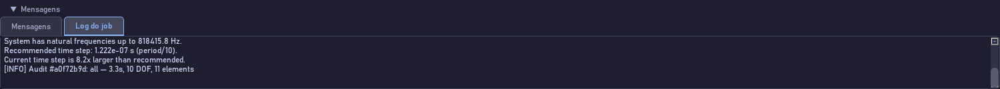

O módulo Analysis com as escolhas recomendadas a partir do modelo, e o distintivo DONE na barra: esta análise terminou.

A área de mensagens na aba Log do job, durante e depois da análise. É aqui que aparece o motivo, quando algo dá errado.
Transcrição
O módulo Analysis é onde a simulação acontece. O painel à direita traz as escolhas recomendadas a partir do modelo: o integrador, o modo de controle e o modelo de atrito. O Step no topo escolhe entre a pré-carga estática e o afrouxamento acoplado. Clique em Run, ou pressione control R de qualquer módulo. A área de mensagens abre sozinha na aba Log do job e mostra o progresso, ciclo a ciclo. O distintivo na barra diz RUNNING, depois DONE. Se disser ERROR, o motivo está no log, na última linha. Uma análise de cem ciclos leva um segundo; de cem mil, alguns minutos.
Cada controle desta tela
Controle
O que faz
Step
Static-Preload ou Coupled-Loosening.
Integrator
Newmark-β ou HHT-α; o recomendado vem marcado.
Control mode / Friction model
Repetem as escolhas de Loads para conferência.
Run (Ctrl+R)
Inicia a análise.
Stop
Interrompe uma análise em andamento.
Distintivo RUNNING / DONE / ERROR
Estado do job, na barra de módulos.
Log do job
A saída da análise, linha a linha.
Erro comum. Run desabilitado: você não está no módulo Analysis, ou não há modelo carregado.